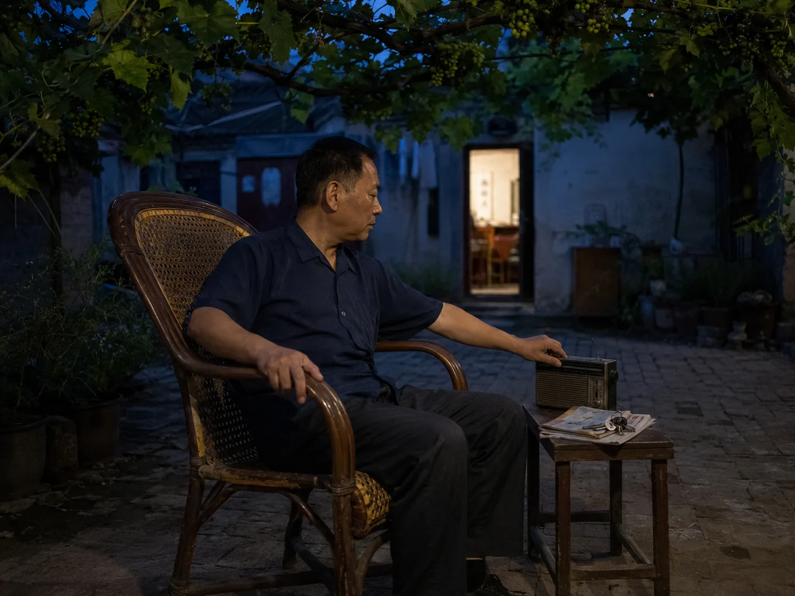

The Cane Chair Under the Grape Arbor
After his evening round, the lane watchman carried a worn cane chair beneath the shared grape arbor and reached for the radio on a low stool.

A chair carried outside
The watchman at the end of our lane finished his evening round after the supper bowls had begun to clatter behind open doors. He returned with a ring of keys at his belt and carried a cane chair from the gate room. Before setting it down, he pressed the woven seat with one palm and checked a loose strand near the left arm. The chair answered with a short creak before it touched the bricks.
The chair always went beneath the shared grape arbor, but not in exactly the same place. He watched where the last light passed through the leaves and turned the high back away from it. I moved the low stool closer while he settled the chair legs between uneven bricks.
Evening rest without a bed
He remained upright and awake, one arm along the curved wood and one hand near the radio dial. Neighbors stopped for a few sentences as they crossed the courtyard, then continued home. The cane gave a dry creak whenever he leaned forward to answer them.
The post-meal walk carried people around a courtyard or down a familiar lane, while the post-lunch pause belonged to the closed eyes and shortened noise of midday. His chair held a third interval: seated, social, and still awake as the evening moved around him.
Grape shadows across the cane
Small green grapes hung above the chair, and the leaves made irregular shapes across his shirt as the doorway lights came on. The radio faded beneath bicycle bells, dishwater, and voices from the next yard. A moth moved once through the warm rectangle of the nearest doorway. He folded the newspaper without opening it and placed his keys on top.
When the broadcast ended, he turned the dial until it clicked. He slid the folded paper between the cane seat and the right arm, then left the chair beneath the dark leaves.